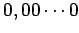
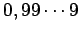

Inhalt Index DeskTop Bronstein

 Wahrscheinlichkeitsrechnung und Mathematische Statistik Mathematische Statistik Stichprobenfunktionen Grundgesamtheit, Stichproben, Zufallsvektor
Wahrscheinlichkeitsrechnung und Mathematische Statistik Mathematische Statistik Stichprobenfunktionen Grundgesamtheit, Stichproben, Zufallsvektor


Bei gehortetem oder geschichtetem Material, z.B. Betonplatten, ist eine zufällige Entnahme besonders schwierig oder sogar unmöglich. Dann kann eine Tafel von Zufallszahlen verwendet werden (s. z.B. Tabelle Zufallszahlen).
Auf dem Intervall [0,1] kann man mit vielen Taschenrechnern gleichmäßig verteilte Zufallszahlen erzeugen, indem man z.B. mit der Taste RAN völlig regellos angeordnete Zahlen zwischen  und  aufruft. Daraus lassen sich durch Aneinanderreihen der Ziffern nach dem Komma mehrstellige Zufallszahlen bilden.
Häufig werden Zufallszahlen auch in Tabellen angegeben. In der Tabelle Zufallszahlen sind zweistellige Zufallszahlen angegeben, die auch zu mehrstelligen Zufallszahlen zusammengefaßt werden können.
| Beispiel |
|
Aus einer Lieferung von 70 gestapelten Rohren soll eine zufällige Stichprobe vom Umfang 10 entnommen werden. Dazu werden die Rohre von 00 bis 69 numeriert. Mit Hilfe einer zweistelligen Zufallszahlentafel wird das System festgelegt, nach dem die Auswahl geschehen soll, z.B. horizontal, vertikal oder diagonal. Sollten sich dabei Zufallszahlen wiederholen oder treten Zahlen auf, die größer als 69 sind, dann werden diese weggelassen. Die Rohre mit den Nummern der entsprechenden Zufallszahlen gehören dann zur Stichprobe. Steht nur eine Tafel mehrstelliger Zufallszahlen zur Verfügung, dann werden bestimmte Zweiergruppen ausgewählt. |